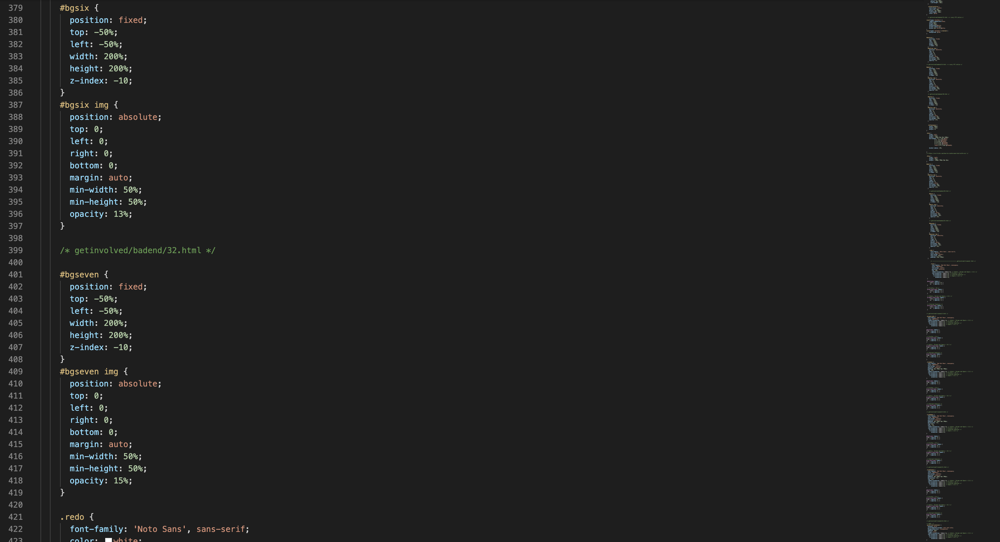

The Quick Connect HQ
Born out of this struggle, came the understanding from six aquaintances that a social revolution was on the horizon. No longer
would people thrive in a world that required its inhabitants to be online for the better part of their days.
The evolution of our logos. QC smiley in 2031 (left); QC smiley in 2032 (right). What a difference!
In November of 2031, the Third Party Act was put into place in the U.S. This act allowed companies
to use personal data in an effort to connect better with their audiences. It was this act that allowed the team at Quick Connect
to put their ideas into action.
U.S. Congress passing the Third Party Freedom Act (November 2031)
Our team worked effortlessly to perfect the vision for a social media app that was now in our grasp. Because of the liberation of personal data, this would be an app with
limitless connections and a guaranteed social success.
A CSS snippet. Our coders have been hard at work!
Finally, we're there! We began our beta testing program in May of this year with promising results. We hope you decide
to join the program as well. Our team needs you! Speaking of which...
Meet the team!

Emily Snyder (Project Lead)
Zayla Neil (Programming)
Grayson Yorke (Design)
Gordon Powers (Marketing)
Leah Brown (Finance Strategist)
Odin Larsson (Editor)
We are all beyond excited that you are here. We're ready to make your data work for you.